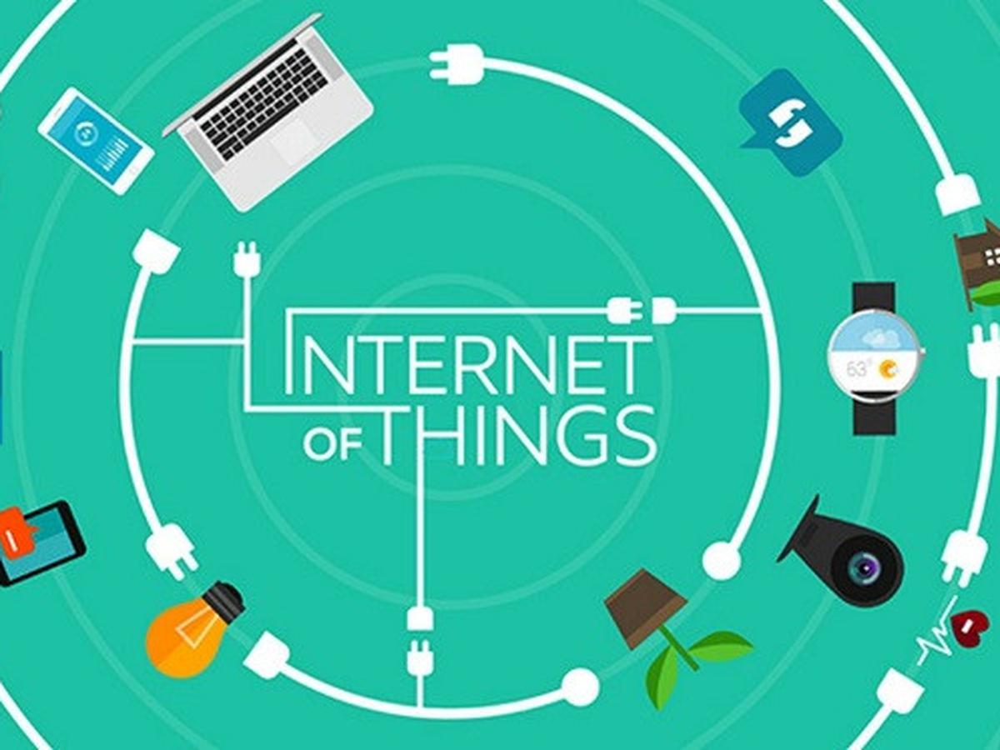

<!DOCTYPE html>
<html lang="en">
<head>
    <meta charset="UTF-8">
    <meta http-equiv="X-UA-Compatible" content="IE=edge">
    <meta name="viewport" content="width=device-width, initial-scale=1.0">
    <title>Ngulix_Linux</title>
    <link rel="stylesheet" href="asset/css/bootstrap.min.css">
    <link rel="stylesheet" href="asset/css/main.css">
  <header class="navbar sticky-top navbar-expand-lg navbar-dark main-nav">
      <div class="container">
        <a class="navbar-brand" href="index.html">
            </a>
            </a>
        <button class="navbar-toggler" type="button" data-bs-toggle="collapse" data-bs-target="#navbarNavAltMarkup" aria-controls="navbarNavAltMarkup" aria-expanded="false" aria-label="Toggle navigation">
          <span class="navbar-toggler-icon"></span>
        </button>
        <div class="collapse navbar-collapse" id="navbarNavAltMarkup">
          <div class="navbar-nav ms-auto py-3">
            <a class="nav-link px-3" aria-current="page" href="index.html">Home</a>
            <a class="nav-link px-3" href="tutor.html">VIDEO TUTOR</a>
            <a class="nav-link px-3" href="service.html">SERVICE</a>
            <a class="nav-link px-3" href="linux.html">LINUX</a>
            <a class="nav-link px-3" href="dpk-utama.html">DPK</a>
            <a class="nav-link active px-3" href="iot.html">IOT</a>
            <a class="nav-link px-3" href="ekskul.html">EKSKUL</a>
          </div>
        </div>
      </div>
  </header>
  <footer>
    <div class="main-footer-menu main-biru py-5">
      <div class="containe">
        <div class="row">
          <div class="col-lg-3 mb-3">
            <div class="mb3">
              <a href="index.html"></a>
            </div>
            <p class="px-4">Internet Of Things</p>
          </div>
          <div class="col-lg-3 mb-3">
            <h3>Materi IOT</h3>
            <ul>
              <h3>
              BAB I ELEKTRONIKA DASAR
              </h3>
              <li><a href="https://bit.ly/3RPf55M" target="_blank">   A. Pemahaman Elektronika Dasar</a></li>
              <li><a href="https://bit.ly/3QzIwI9" target="_blank">   B. Kelistrikan</a></li>
              <li><a href="https://bit.ly/3RX8ohZ" target="_blank">   C. Alat Ukur</a></li>
              <li><a href="https://bit.ly/3d8Ewkg" target="_blank">   D. Solder</a></li>
              <h3>
                BAB II PENGENALAN MIKROKONTROLER ARDUINO
              </h3>
              <li><a href="https://bit.ly/3RRXsSU" target="_blank">Pengertian Mikrokontroler,Jenis - Jenis Mikrokontroler, Arduino</a></li>
              <h3>
                BAB III PENGENALAN SOFTWARE ARDUINO
              </h3>
              <li><a href="https://bit.ly/3QHptM2" target="_blank">Definisi Software Arduino IDE, Menulis Sketch, Sketchbook, Tab, Multiple File, dan COmpilations, Uploading, Library, Serial Monitor, Preferences, Languages Support, Boards </a></li>
          </div>
          <div class="col-lg-3 mb-3">
            <h3></h3>
            <ul>
              <h3>
                BAB IV BAHASA PEMOGRAMAN ARDUINO
               </h3>
               <li><a href="https://bit.ly/3BGP5EF" target="_blank">Bahasa Pemograman Arduino Berbasi C</a></li>
               <h3>
                 BAB V MENERAPKAN KOMUNIKASI DATA PADA ARDUINO
               </h3>
               <li><a href="https://bit.ly/3xoCtzf" target="_blank">Komunikasi Data, Jenis-jenis Komunikasi Data, Komponen Komunikasi Data<</a></li>
               <h3> 
                 BAB VI MENGENAL JENIS-JENIS SENSOR
               </h3>
               <li><a href="https://bit.ly/3BCi3Fs" target="_blank">Pengertian Sensor, Klasifikasi Jenis Sensor, Jenis-jenis Mikrokontroler, Mikrokontroler Baca Sensor</a></li>
          </div>
          <div class="col-lg-3 mb-3">
            <h3></h3>
            <h3> 
              BAB VII MENGENAL PLATFORM IOT
            </h3>
            <li><a href="" target="_blank">   A. Blink </a></li>
            <li><a href="" target="_blank">   B. Komponen Utama Blynk</a></li>
            <li><a href="" target="_blank">   C. Konfiguarasi Blynk</a></li>
            <li><a href="" target="_blank">   D. Konfigurasi Arduino IDE</a></li>
            <h3> 
              BAB VIII Visualisasi Data
            </h3>
            <h3>
              BAB XI MERANCANG PRODUK IOT
            </h3>
            <li><a href="" target="_blank">   A. Merancang Produk</a></li>
            <li><a href="" target="_blank">   B. Membuat Produk</a></li>
            <h3> 
              BAB X MERANCANG DOKUMENTASI PRODUK
            </h3>
            <li><a href="" target="_blank">   A. Pengertian DOKUMENTASI</a></li>
            <li><a href="" target="_blank">   B. Proses Dokumentasi</a></li>
           <a href="iot2.html" target="_blank" class="btn btn-warning">KUMPULAN PROJECK</a>
            </div>
        </div>
      </div>
    </div>
    <div class="text-center py-2 main-footer-copyright">Copyright @lan 2021. All Rights Reserved</div>
  </footer>
   <script src="asset/js/bootstrap.bundle.min.js"></script>
   <script src="asset/js/jquery-3.6.0.min.js"></script>
   <script src="asset/js/main.js"></script>
</body>
</html>
